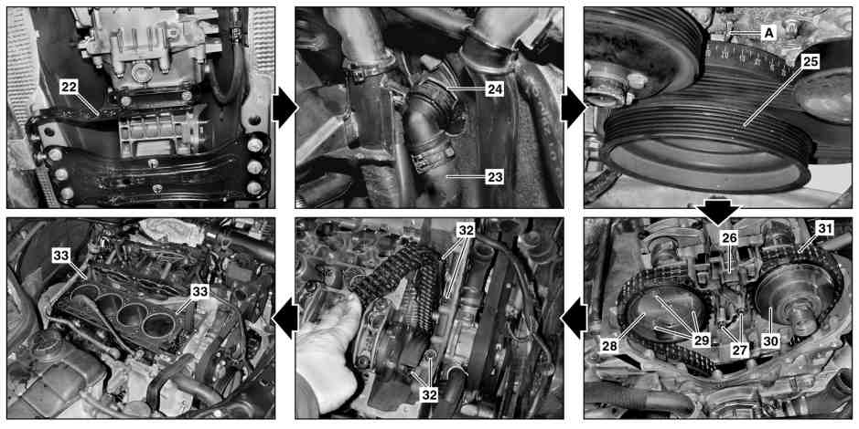
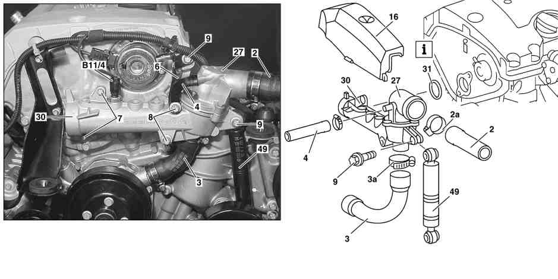
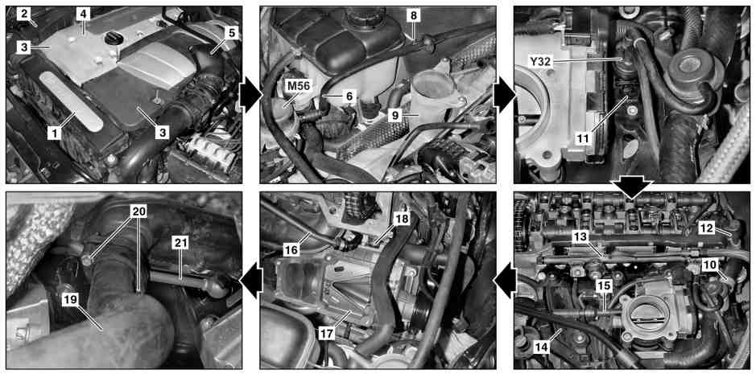

Подключение трубок после установки ГБЦ
А. Антифриз и отопитель
Трубка отопителя сзади ГБЦ
До установки впуска найди жёсткую трубку 23, которая уходит к отопителю, и гнездо на задней части двигателя. Поставь новое уплотнение, вставь трубку ровно до упора и защёлкни скобу 24. Слегка потяни трубку рукой и проверь, что она удерживается.


Три патрубка на корпусе термостата
Поставь корпус 30 с новым кольцом 31. На рисунке WIS 2 — крупный патрубок на прямом выходе термостата, ветвь к верхнему штуцеру радиатора. 3 — короткий формованный отвод снизу корпуса к помпе. 4 — тонкий шланг на малом боковом штуцере. Для 4 на фото показан конец у корпуса. Второй конец проследи по штатной трассе машины перед заполнением.
Проверь состояние хомутов 2a и 3a, верни зажимы на их посадочные места. Подключи датчик температуры ОЖ B11/4.


Радиатор, бачок и крепление трубки у компрессора
Если их отсоединяли, проверь нижнюю ветвь радиатора до помпы, линии расширительного бачка и обратную ветвь отопителя до штатных тройников. Трасса отопителя и дополнительных ветвей зависит от комплектации. Трубку «радиатор — помпа» верни в её крепление на узле штуцеров компрессора. В AR09.50-P-8841PK это отдельная позиция 2 с крепёжным винтом 1.
Б. Вакуум, усилитель тормозов и адсорбер

Усилитель тормозов и насос M56 на 722.6
Проследи штатную магистраль от вакуумного усилителя через обратный клапан к источнику разрежения. На версии с 722.6 восстанови соединения 6 и 8 по верхнему среднему кадру. 6 защёлкивается на электрическом вакуумном насосе M56. 8 на том же кадре входит в отдельный стык линии выше. Сверь оба конца по трассе и проверь фиксацию лёгким подтягиванием. Сохрани ориентацию штатного обратного клапана.
Две тонкие трубки клапана Y32
Закрепи электроклапан Y32 на кронштейне 11 у впуска. Входная ветвь приходит от источника разрежения на впуске, управляемая ветвь идёт к мембранному клапану вторичного воздуха на стороне выпуска. Если обе трубки сняты с Y32, идентифицируй их по дальним концам и обозначениям на клапане. На обзорном фото разводка портов до конца не прослеживается. Если есть отдельный обратный клапан, сохрани его ориентацию по штатной схеме. Подключи фишку Y32.
Продувка адсорбера Y58/1
У впускного коллектора 14 верни линию 15 от клапана продувки Y58/1. Второй вывод клапана соединяется с магистралью паров, идущей от адсорбера. На схеме бака пары идут по линии 93, подача топлива к двигателю обозначена отдельно как 92. Если снимались обе линии, проследи их до штуцеров и подключи фишку клапана.
В. Вентиляция картера
Шланг под впускным коллектором
Пока снизу есть доступ, надень шланг 7 на Т-образный штуцер под впуском. Стрелка на схеме указывает именно на этот стык. Проверь обе ветви тройника к штуцерам со стороны ГБЦ. Осмотри резину на трещины, особенно у концов.

Трубка сверху и отвод у компрессора
Верни трубку вентиляции 16 на головку по нижнему среднему кадру общего щита. На отдельном листе компрессора вентиляционная линия 7 подключается к блоку входного и напорного штуцеров 3. Проверь оба места, если снимал воздуховоды. Цифра 7 на двух листах относится к разным выноскам.
Г. Компрессор, наддув и трубка выпуска
Толстые воздушные патрубки
Проверь тракт от корпуса фильтра и узла заслонки рециркуляции с резонатором к входу нагнетателя. Напорная труба 4 на отдельной схеме WIS соединяет напорный штуцер 3 с трактом интеркулера. При разъединении поставь новое кольцо 6, посади соединение до упора и закрой скобу 5. Проверь также выход интеркулера к дросселю, если снимал этот патрубок. В блоке штуцеров к нагнетателю при снятии меняется прокладка 11.
Жёсткая трубка 21 на стороне выпуска
На общем щите трубка 21 видна в нижнем левом кадре. В заводской операции указаны стык у картера с новыми уплотнениями, задние кронштейны на ГБЦ и хомут 10 у кронштейна 11. Верни трубку сначала в штатные посадочные места, затем закрепи кронштейны без натяга. Сюда же относятся опоры передней трубы выпуска, если их снимали.
Д. Топливная рампа
Подача бензина к рампе
На общем фото рампа обозначена 13. В отдельном листе WIS резьбовой подвод топлива — 17/2, сервисный клапан рампы — 1/1. Проверь уплотнения форсунок, посади рампу равномерно и подключи разъёмы. По таблице для M111.981 резьбовое соединение подачи топлива к рампе — 24 Н·м, крепление рампы — 25 Н·м. При повторном разъединении предварительно сбрось давление по WIS.
Е. Проверка перед пуском и выездом
В бюллетене Mercedes P-B-20.30/28 для 203.747 с M111.981 указана вакуумная заправка системы охлаждения.